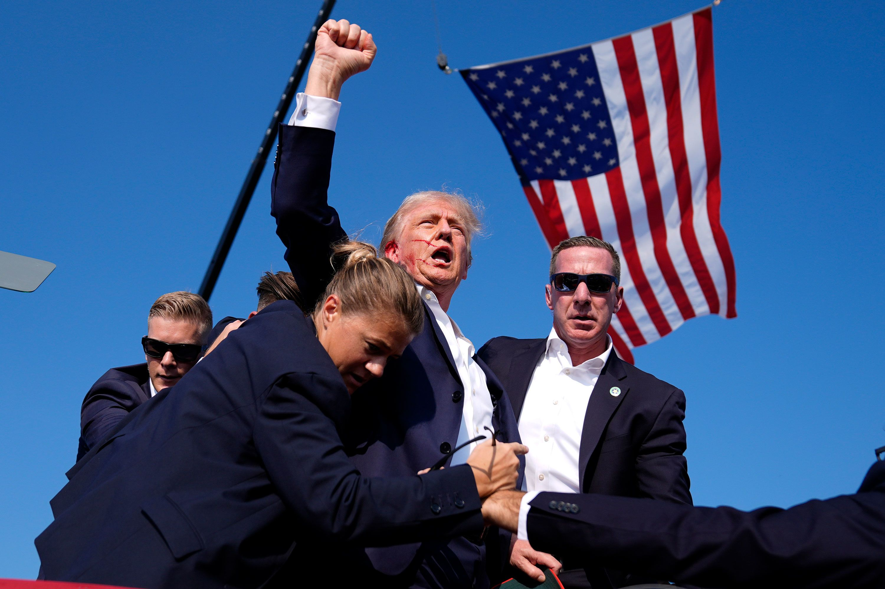
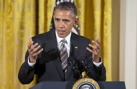

Is Kamala Harris a DEI Candidate? Examining the Debate Vice President-elect Kamala Harris is the first woman, the first Black person and the first Asian American elected to the second highest office in the United States.
Kamala Harris, the first female Vice President of the United States, has been a trailblazer in many respects. Her position as the first woman of color to hold this high office is a significant milestone for diversity, equity, and inclusion (DEI). However, her ascent has sparked debates around whether she is genuinely representative of the DEI movement or if her candidacy was primarily driven by political strategy. Let's explore both sides of this contentious debate.
The Case Against Kamala Harris as a DEI Candidate
Critics argue that Harris's selection as Joe Biden's running mate was more about optics than a genuine commitment to DEI. They claim that her candidacy was a strategic move to appeal to a diverse electorate rather than a reflection of deep-rooted beliefs in inclusion and equity. For these critics, Harris's rise is seen as a convenient way to check a DEI box rather than address the broader structural inequalities in American politics.
Is Donald Trump a Great President? Analyzing the Legacy

Donald Trump holding his hands up after getting shot
The question of whether Donald Trump was a great president is highly polarizing. Depending on who you ask, answers range from enthusiastic praise to intense criticism. Trump's presidency (2017-2021) brought about significant changes in U.S. domestic and foreign policies, which continue to influence political discourse today. In this blog, we'll take a balanced look at some of his key achievements and controversies to assess his legacy.
The Case for Trump as a Great President
One of Trump's central campaign promises was to revitalize the U.S. economy, and in his first three years, the economy experienced notable growth. Unemployment rates fell to historic lows, particularly for minority groups. By the end of 2019, African American and Hispanic unemployment reached record lows. Proponents argue that his tax cuts, deregulation policies, and efforts to bring manufacturing jobs back to the U.S. were key contributors to this economic boost.
Is President Obama Responsible for Kunduz Hospital Airstrike?

President Barack Obama speaks at the White House in Washington, D.C., on Wednesday. (Photo: Pablo Martinez Monsivais/Associated Press)
Obama’s Responsibility and the Flaws in His Military Strategy
During his presidency, Obama significantly increased the use of airstrikes and drone warfare as part of his strategy to combat terrorism and insurgent groups like the Taliban, ISIS, and Al-Qaeda. While proponents of this approach argue that it reduced the need for ground troops and minimized American casualties, critics point out that it often resulted in civilian deaths and collateral damage.
The Kunduz hospital airstrike was emblematic of the dangers associated with the over-reliance on airpower. In complex and densely populated environments like Afghanistan, where insurgents often operate near civilian areas, the risk of mistakes increases dramatically. The destruction of a hospital, especially one run by a neutral humanitarian organization, highlighted the limits and dangers of the Obama administration’s approach to counterterrorism.
In the aftermath of the Kunduz strike, the U.S. military conducted an internal investigation, which concluded that the strike was a mistake caused by "human error." While Obama publicly apologized for the incident, MSF and many international observers were unsatisfied with the level of accountability.
.png)